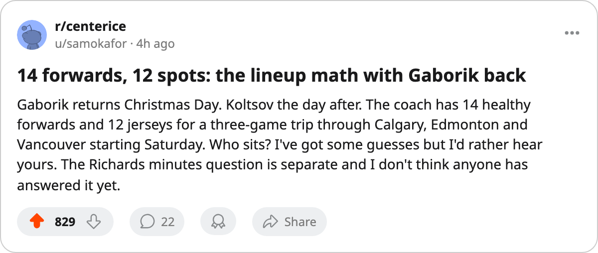

TOR
TORPractice Notes: Gaborik returns with 13 forwards for 12 spots, and Richards' 12.1 minutes haven't moved in 35 games
The leg injury is done, Koltsov is back 2005-12-26, and the coach has to decide who watches the road trip from the press box
 Sam OkaforLeafs beat reporter · Queen City Telegram
Sam OkaforLeafs beat reporter · Queen City Telegram
The piece
 Marian Gaborik99 returns from a leg injury on 2005-12-25 and is available for Saturday's road game at
Marian Gaborik99 returns from a leg injury on 2005-12-25 and is available for Saturday's road game at  Calgary Flames, the first meeting between the Maple Leafs and the Flames this season. Konstantin Koltsov73 has a return date of 2005-12-26.
Calgary Flames, the first meeting between the Maple Leafs and the Flames this season. Konstantin Koltsov73 has a return date of 2005-12-26.
Toronto currently dresses 12 forwards:  Mats Sundin92 and Petr Chlup87 at centre on the first two lines,
Mats Sundin92 and Petr Chlup87 at centre on the first two lines,  Brad Richards87 on the third and Vaclav Spacek81 on the fourth.
Brad Richards87 on the third and Vaclav Spacek81 on the fourth.  Alexander Mogilny89 and
Alexander Mogilny89 and  Stanislav Chistov87 flank Sundin.
Stanislav Chistov87 flank Sundin.  Maxim Afinogenov86 and
Maxim Afinogenov86 and  Rick Nash85 are on the second with Chlup.
Rick Nash85 are on the second with Chlup.  Nikita Alexeev80 and
Nikita Alexeev80 and  Jamie Lundmark81 centre Richards. Scottie Upshall78 and Koltsov round out the fourth.
Jamie Lundmark81 centre Richards. Scottie Upshall78 and Koltsov round out the fourth.
With Gaborik and Koltsov both available, the forward group hits 14 healthy bodies. Only 12 dress. The coach has not shown the road-trip lines in practice this week. Gaborik's even-strength slot is open: before the leg injury he averaged 22.6 minutes a night, the highest number on the roster outside Sundin's 23.4.
The Richards minutes
Brad Richards is 25, 87 overall, $6.70M with 4 contract years remaining. He is the third-line centre at 12.1 minutes a night with 22 points in 35 games. He skates on the top power-play unit as a right wing, which is where the minutes come from. At even strength he plays 12.1 minutes, the fewest of any regular forward on the roster. Richards' line-mates, Alexeev and Lundmark, play 10.5 and 7.4 minutes respectively. The entire third line skates 30 minutes out of 60.
The gap between the second line (Chlup-Afinogenov-Nash at 20.5, 17.8 and 15.0 minutes) and the third is the widest of any pair of Toronto lines. Chlup alone plays 8.4 minutes more per game than Richards.
The trip
Toronto opens Saturday in Calgary against a Calgary Flames club that is 5-10 at home and on a 3-game losing streak.  Edmonton Oilers follows Sunday; the Edmonton Oilers home record is 6-9.
Edmonton Oilers follows Sunday; the Edmonton Oilers home record is 6-9.  Vancouver Canucks closes the trip on 2005-12-31, the final game before 2006. Toronto is 11-2 on the road, the best mark in the Northeast.
Vancouver Canucks closes the trip on 2005-12-31, the final game before 2006. Toronto is 11-2 on the road, the best mark in the Northeast.
Gaborik missed 18 games. He is 8 points in 17 games with a +11 on the Development Index, the second-highest form term on the Bureau's list. He carries a leg designation from a window between 2005-11-16 and 2005-11-17. The return date is firm: 2005-12-25.
 Roberto Luongo95 has started 17 of 35 games. Maxime Ouellet86 has 8. The remaining 10 are split, with Luongo carrying the committee's trust and morale at 82, the lowest number among Toronto's regular skaters and goaltenders.
Roberto Luongo95 has started 17 of 35 games. Maxime Ouellet86 has 8. The remaining 10 are split, with Luongo carrying the committee's trust and morale at 82, the lowest number among Toronto's regular skaters and goaltenders.
